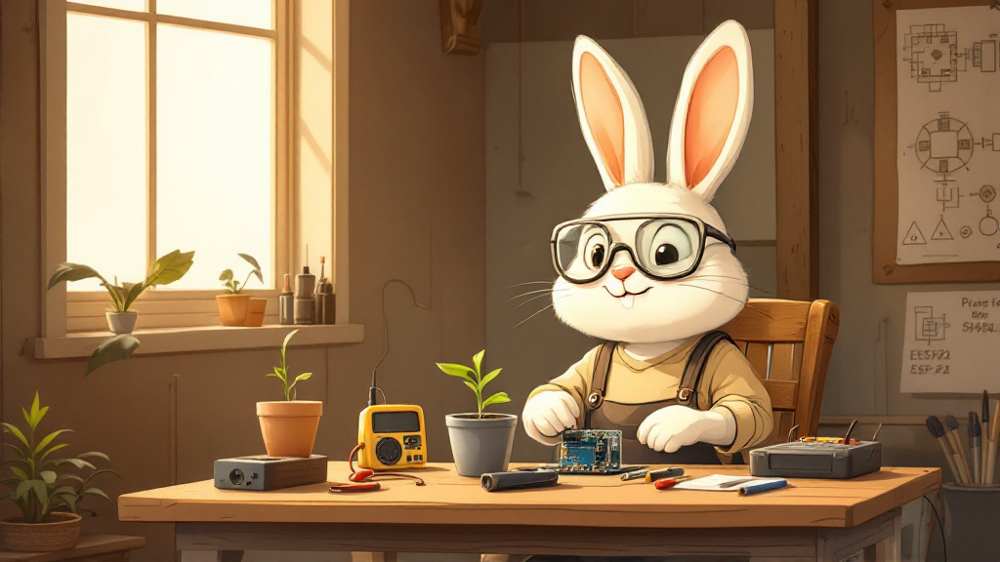

Aktif Geliştirme
OTONOM SAKSI
SeraOS — Otonom Bitki Sistemi
Tek saksıdaki bitkiyi insan müdahalesi olmadan tam otonom bakan gömülü sistem. Su, ışık, sıcaklık ve nem sensörlerle ölçülür, aktüatörlerle karşılanır — internetsiz çalışır.
Otonom Sulama
Toprak nem sensörü kuruluğu görünce pompa çalışır; su bitince kuru-çalışma kilidi devreye girer.
Akıllı Işık
Işık sensörü + RTC takvim ile grow LED, günlük ışık dozuna (DLI) göre sürülür.
İklim Kontrolü
Sıcaklık/nem eşiği aşılınca fan devreye girer, VPD dengelenir.
Kesintisiz Beyin
LiPo UPS ile elektrik gidince ESP32 ayakta kalır, kaldığı yerden sürer.
3/6Modül